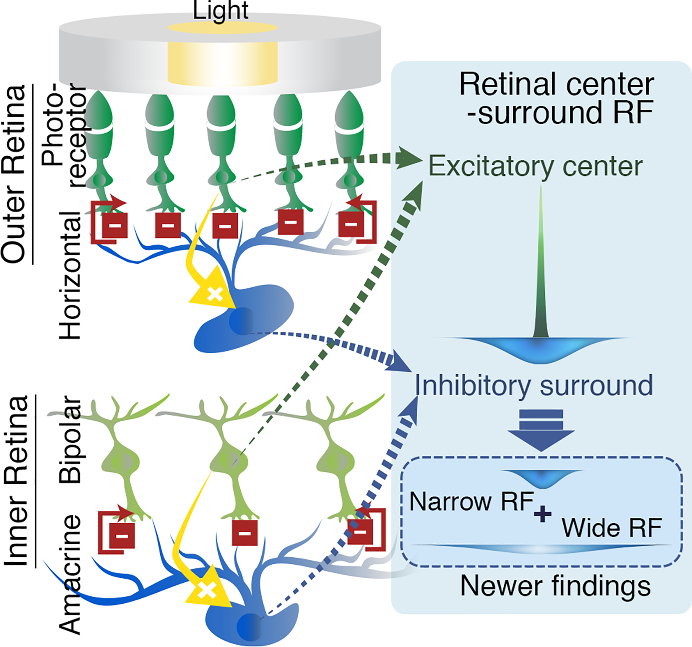

The retina — which is embryologically brain tissue that migrated into the eye — recombines three raw cone signals into opponent channels before any signal leaves the eye, so that the world has already been interpreted one synapse past the photoreceptors.
The retina performs a surprising computation before any signal leaves the eye. Photoreceptors — three cone types tuned to roughly red, green, and blue — feed into a second layer of bipolar cells and then into retinal ganglion cells, just one synapse later. At this stage the three raw cone signals are recombined into opponent channels: red versus green, blue versus yellow (yellow being the sum of red and green), and light versus dark1. This transformation happens entirely within the retina, which is itself embryologically brain tissue — an outgrowth of the developing brain that migrated into the eye. By the time visual information reaches the optic nerve, the world has already been decomposed into these three axes. The eye does not merely sense. It interprets.
